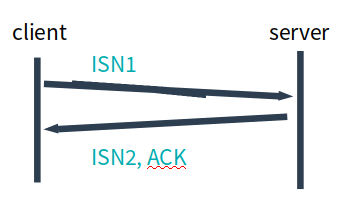

协议
为了方便描述, 给本协议起个名字, 暂且叫做 moru (modern reliable udp).
moru 需要支持的功能应该是如下这个样子:
- 1.建立连接和断开连接是可靠的
- 2.面向报文
- 3.支持不可靠, 半可靠和完全可靠三次方式(报文收发)
- 4.支持冗余纠错
- 5.支持bbr, cubic两种拥塞控制方式
- 6.多路复用等 tiny features
引入起始序号(ISN), 后续的报文在后面递增
可靠的建立连接
在moru中需要几次握手.
为了支持1 3 5, 协议头中必须包含 “序号” 和 “时间戳”, 并且需要有ACK报文.
序号从0开始可以么? 不可以, 原因是: 为了避免旧连接的数据被新连接收到.
The purpose in these sequence numbers is to prevent packets that get delayed in the network from being delivered later and then misinterpreted as part of an existing connection
因此moru中要引入TCP中的ISN(intial sequence number).
因此连接中的双方分别需要告诉对方自己的ISN, 这里需要交换2个报文.
引入ISN需要2个报文, 那么在网络中建立一个可靠的连接需要几个报文?
这个问题的本质是, 信道不可靠, 但是通信双发需要就某个问题达成一致. 而要解决这个问题, 无论你在消息中包含什么信息, 三次通信是理论上的最小值. 所以三次握手不是TCP本身的要求, 而是为了满足”在不可靠信道上可靠地传输信息”这一需求所导致的. 请注意这里的本质需求,信道不可靠, 数据传输要可靠. 三次达到了, 那后面你想接着握手也好, 发数据也好, 跟进行可靠信息传输的需求就没关系了. 因此,如果信道是可靠的, 即无论什么时候发出消息, 对方一定能收到, 或者你不关心是否要保证对方收到你的消息, 那就能像UDP那样直接发送消息就可以了
因此三个报文就可以满足”可靠的建立连接”, 并且引入 SYN, ACK两个标记.
下面分析三次握手中的server端流程
server 收到一个 SYN 之后, 取出client的ISN 作为ack, 并且发送自己的ISN:

然后持续等待, 在这过程中可能遇到:
- 收到对方的正确的ack, 那么连接顺利建立
- 再次收到对方的SYN, ISN是同一个, 重发 SYN, ACK
- 再次收到对方的SYN, ISN不是同一个, 执行listen流程
- 收到了对方的数据,但是ack的序号不对. 忽略, 并且重发 SYN, ACK
下面分析三次握手中的client端流程
客户端发送SYN之后, 持续等待回包, 在这过程中可能遇到:
-
收到对方的SYN ACK, 响应ACK后, 建立连接 - 收到RST, 连接断开
- 超时, 重发SYN
- 收到莫名其妙的包, 忽略
| 连接建立后, 仍旧有可能收到来自对端的SYN | ACK, 因为最后一次ACK可能会丢失. |
但是, 这里不做处理, 通过后续的发包来”重传”这个ACK.